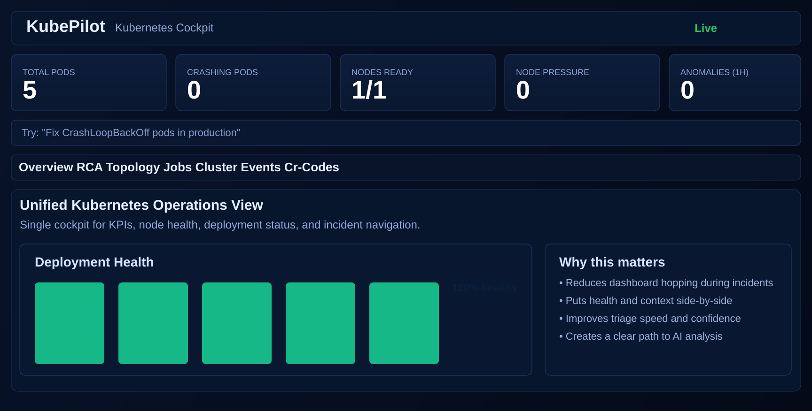
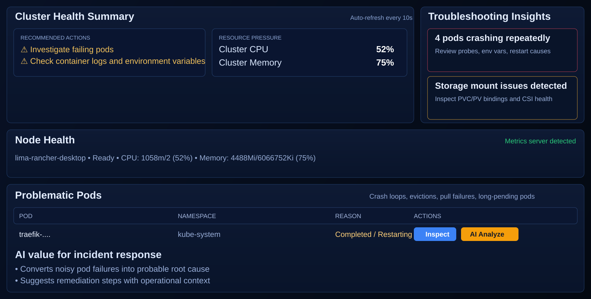

Cluster Events Hub
Filter and search Kubernetes events, correlate with failing pods, and prioritize warning patterns.
KubePilot combines cluster events, node pressure, pod diagnostics, and topology views into one workflow. Engineers can inspect incidents and run AI analysis without jumping across multiple tools.
A practical incident workflow that blends observability context with AI recommendations.
Filter and search Kubernetes events, correlate with failing pods, and prioritize warning patterns.
Detect pressure signals and capacity hotspots early with CPU and memory utilization visibility.
Open pod diagnostics for status, conditions, events, and logs in one drill-down panel.
Use AI suggestions to triage faster and identify safer remediation actions during incidents.
These screenshots are sourced from the repository docs folder for GitHub-friendly documentation.


A simple 4-step loop to reduce mean-time-to-resolution.
Use source build for now and run locally on your current kubeconfig context.
git clone https://github.com/kubepilot/kubepilot.git
cd kubepilot
make dashboard-install
make dashboard
make build
KUBEPILOT_KUBECONFIG="$HOME/.kube/config" ./dist/kubepilot serve --dashboard-port=8383